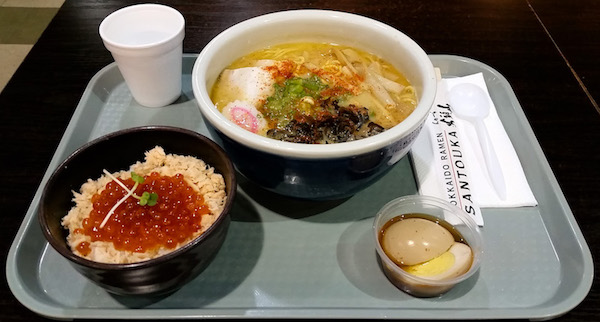

History of Hakata Tonkotsu Ramen
Tonkotsu ramen originated in Fukuoka, Fukuoka Prefecture, which is located on the northern shore of Kyushu island in Japan, and it is a specialty dish in Fukuoka and Kyushu. In Fukuoka, the dish is often referred to as Hakata ramen (博多ラーメン) as Hakata is the historical name of central Fukuoka, but can also be called "Tonkotsu Ramen". The dish is prepared in ramen shops in all other regions of Japan.[2] Tonkotsu ramen was originally prepared as an affordable and easily prepared fast food for laborers at fish markets.[4] In contemporary times, tonkotsu ramen is renowned for the significant time it can take to prepare a proper version of the dish.

Where To Get The Best Tonkotsu Ramen in Boston
I know Totto Ramen first place in New York. It was very traditional Japanese resterunt look like In New York and I had super nice bowl of Ramen there. So after it opened one in Boston, I go there immedetely. Same as the one in New York, the soup is so rich and heavy favored and it because the soup they provide usually take 12 hours to cook slowly. I really like the very first bit of this rich flavored soup, however if you eat too fast or too much, you may feel a little sick and need a bottle of green tea. Overall, it has very good taste and the price is also much cheaper than the one in New York, however it is cash only.
169 Brighton Ave Allston, MA 02134